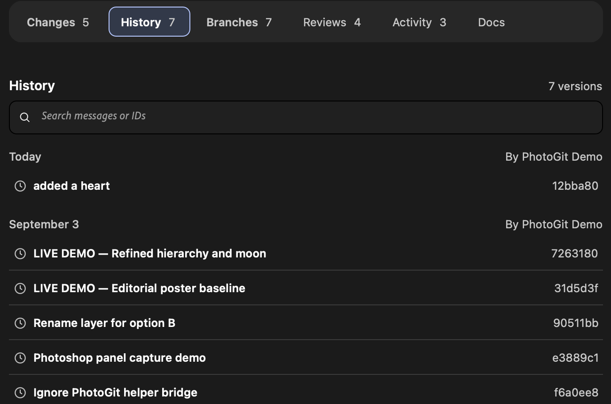
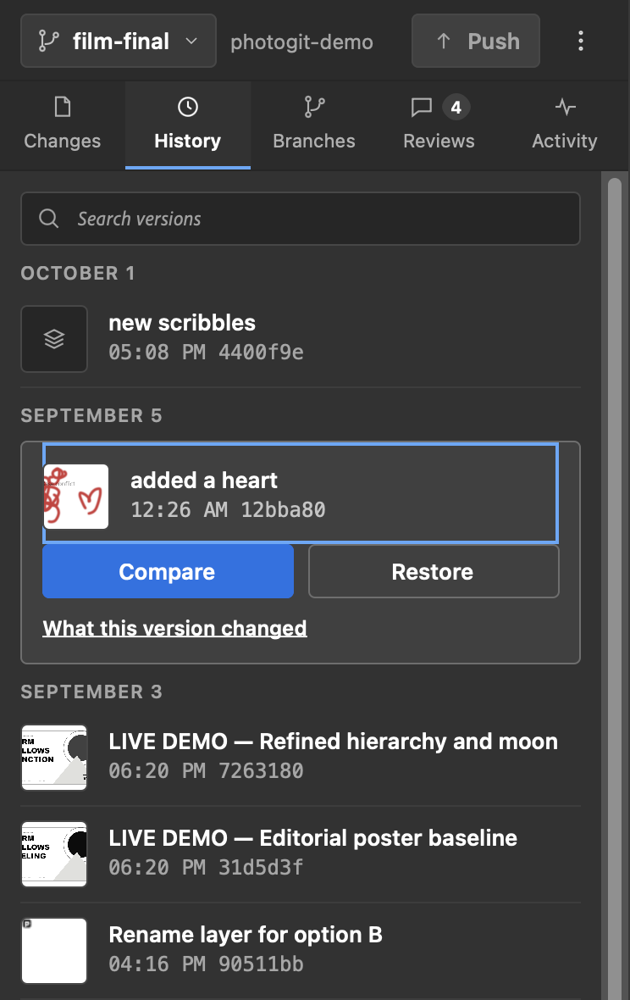

Layer-by-layer changes
See which layers were added, deleted or edited, down to pixels, text, opacity, blend mode and order.
Save versions of your PSDs, see which layers changed, and try new directions on branches inside Photoshop.

Keep one working PSD and a searchable version history. Give each version a name so you can find and reopen it in the PhotoGit panel.
Open PhotoGit next to your Layers and History panels to revisit saved versions, switch branches, or review changes.



See which layers were added, deleted or edited, down to pixels, text, opacity, blend mode and order.
Every version stores the full PSD, so you can always reopen precisely what you saved. Nothing is flattened or approximated.
Put any saved version beside your open document and see what moved before you commit to it.
Try a new direction on a branch. PhotoGit flags conflicting PSD edits before merging.
Your artwork lives in a folder on your machine. Nothing is uploaded unless you push to a remote you choose.
Every version is an ordinary Git commit, so GitHub, backups and your team’s existing tools just work.
You need Node.js 22+, Git with Git LFS, Photoshop 2024 (v25) or later, and Adobe UXP Developer Tools. The terminal is only used once, for setup.
Clone the repository and build it.
git clone https://github.com/xingexu/photogit.git
cd photogit && npm ci && npm run buildPoint PhotoGit at a folder for your artwork and start the local helper.
npm run photogit -- init ~/Design/poster
npm run helper -- --approve-root ~/Design/posterLoad the plugin in UXP Developer Tools, then choose Plugins → PhotoGit in Photoshop and save your first version.
apps/photoshop-plugin/manifest.jsonFull walkthrough, pairing and troubleshooting in the setup guide.
| Capability | “Save As” copies | Plain Git + LFS | PhotoGit |
|---|---|---|---|
| Reopen any exact past PSD | ✓ | ✓ | ✓ |
| See which layers changed | ✕ | ✕ | ✓ |
| Visual before / after compare | Manually | ✕ | ✓ |
| Branch ideas without duplicate files | ✕ | ✓ | ✓ |
| Works inside Photoshop | ✓ | ✕ | ✓ |
| No command line day to day | ✓ | ✕ | ✓ |
| Sync to GitHub or any Git remote | ✕ | ✓ | ✓ |
Yes. PhotoGit is open source under the MIT license. There is no account, subscription or usage limit.
No. Day to day you scan, save, compare and branch from buttons in the panel. Git runs behind the scenes in a small local helper. You use the terminal once, to set up a project.
No. Versions are stored in a folder on your own computer. They only leave it if you choose to push to a Git remote such as GitHub.
The panel targets Photoshop 25 (2024) and later, and has been tested end to end on macOS with Photoshop 2026. Windows has not been verified yet. See the compatibility notes.
Yes, through branches. PhotoGit splits each document into per-layer data, so it can tell when edits overlap. Changes that conflict are flagged for a decision rather than blended automatically.
PhotoGit is an early 0.2 development build. It works, but keep independent backups of important artwork while it matures. Star or watch the repository to hear about releases.
Report a bug, suggest a feature, or contribute code on GitHub.